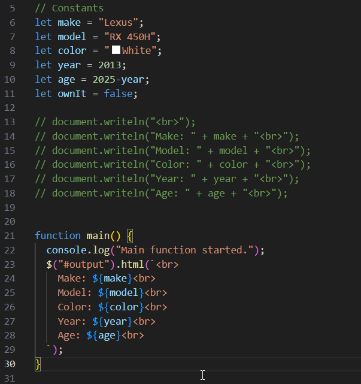
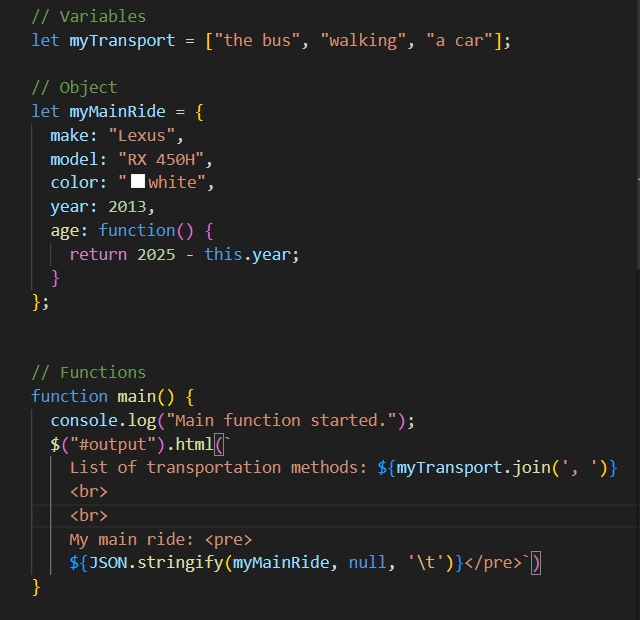
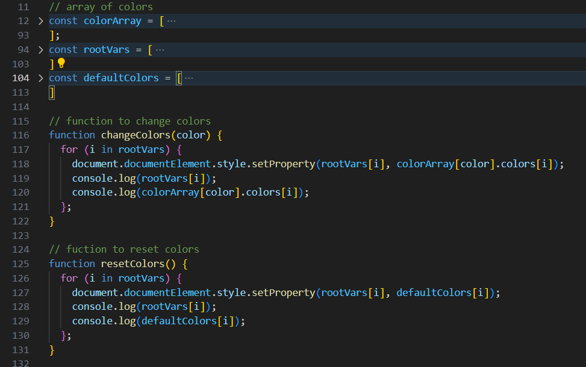
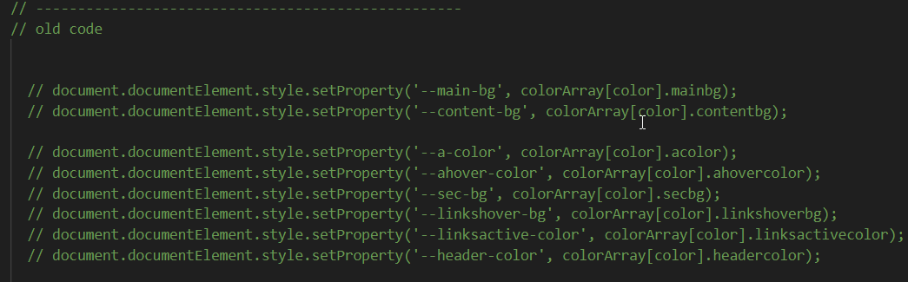

Lab 14 - Debugging Tools & Strategies
Challenge
The challenge of this lab was to go back through previous labs and debug any problems that existed in them.
Problems
The labs I've done before generally didn't have any problems that I could see with regards to whether or not they worked, because I did my best to make sure what I was submitting for the assignment worked. Therefore, instead of purely debugging, I instead made changes to the code to try to make them better.
Reflection
The main thing I'm happy with being able to do is to rework the code from labs 11 and 12, since when doing it I figured there was almost definitely a better way to do it, but I didn't know what/didn't have time. This lab let me go back and change those to be simpler.
Debugging
Labs 5 and 6: I replaced the writeln that we used based on the assignment instructions to instead use jQuery's html to write the output.
 Labs 11 and 12: I reworked my code to change the colors to instead use a loop, so it's not a giant chunk of code (which I included a screenshot of at the bottom). Previously, I was manually setting each root var with a color, and since there were ~7-8 vars, resulted in 7-8 lines of code. I added 2 arrays, one for the names of the vars and one for the default var values, which does still add lines to the file, but the actual code is now much nicer to look at.
 